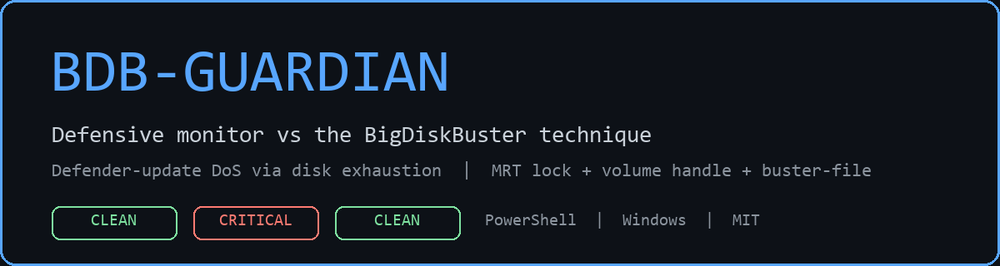
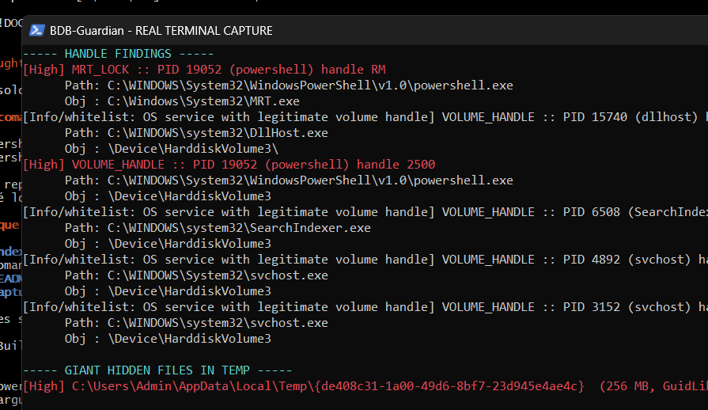

Defensive PowerShell monitor vs the BigDiskBuster technique (Defender-update DoS via disk exhaustion). Tested on Windows 11, admin PowerShell 5.1. The simulator used a controlled 256 MB file - the disk was never filled.
| Phase | Result |
|---|---|
| Baseline (idle) | CLEAN No indicators - 344/344 PIDs, 47.7 s |
| Live detection | CRITICAL PID 19052 holds MRT+volume, buster-file present - 352/352 PIDs, 13.7 s |
| Post (auto-cleaned) | CLEAN No indicators - 347/347 PIDs, 42.2 s |
Idle system. Legit volume holders whitelisted.
MRT_LOCK + VOLUME_HANDLE, same PID + buster-file.
Simulator self-cleaned. Zero leftovers.
Portable rules in detections/ - convert them with
sigma-cli (sigma check / sigma convert -t splunk|kusto).
MITRE ATT&CK: TA0005 Defense Evasion / T1562.001 Disable or Modify Tools.
The MRT+volume correlation in one PID is what EDRs don't cover - that is what
BDBMonitor.ps1 does.
title: BigDiskBuster-like Buster-File Creation in TEMP
status: experimental
logsource: { category: file_event, product: windows }
detection:
selection: { EventID: 11,
TargetFilename|re: '\\Temp\\\{GUID\}$' }
condition: selection # full rule: detections/bigdiskbuster-filecreate.yml
level: medium
Also: detections/mde-hunt.kql (Defender for Endpoint Advanced Hunting).

Same content as the popups, for readers that prefer scrolling.
================================================================
BDB-Guardian :: scan 20260919-215822
================================================================
[*] Volume C: -> \Device\HarddiskVolume3
[*] MRT: C:\Windows\System32\MRT.exe
[*] Hidden-temp threshold: 1024 MB | time-box: 100 s
[1/3] Restart Manager on MRT.exe...
0 process(es) holding MRT open (0,0 s)
[2/3] Volume handle scan (parallel)...
PIDs: 344/344 in 47,7 s | matches: 8
----- HANDLE FINDINGS -----
[Info/whitelist: OS service with legitimate volume handle] VOLUME_HANDLE :: PID 3152 (svchost) handle 744
Path: C:\WINDOWS\system32\svchost.exe
Obj : \Device\HarddiskVolume3
[Info/whitelist: OS service with legitimate volume handle] VOLUME_HANDLE :: PID 4892 (svchost) handle 460
Path: C:\WINDOWS\System32\svchost.exe
Obj : \Device\HarddiskVolume3
[Info/whitelist: OS service with legitimate volume handle] VOLUME_HANDLE :: PID 6508 (SearchIndexer) handle 4772
Path: C:\WINDOWS\system32\SearchIndexer.exe
Obj : \Device\HarddiskVolume3
[Info/whitelist: OS service with legitimate volume handle] VOLUME_HANDLE :: PID 15740 (dllhost) handle 612
Path: C:\WINDOWS\system32\DllHost.exe
Obj : \Device\HarddiskVolume3\
----- GIANT HIDDEN FILES IN TEMP -----
(none >= 1024 MB)
================================================================
VERDICT: CLEAN - No indicators
================================================================
================================================================
BDB-Guardian :: scan 20260919-223650
================================================================
[*] MRT: C:\Windows\System32\MRT.exe
[*] Hidden-temp threshold: 100 MB | time-box: 70 s
[1/3]+[2/3] Native probes in isolated worker (RM + handles)...
MRT holders: 1 | volume PIDs: 352/352 in 13,3 s | matches: 10
[*] Volume C: -> \Device\HarddiskVolume3
----- HANDLE FINDINGS -----
[High] MRT_LOCK :: PID 19052 (powershell) handle RM
Path: C:\WINDOWS\System32\WindowsPowerShell\v1.0\powershell.exe
Obj : C:\Windows\System32\MRT.exe
[High] VOLUME_HANDLE :: PID 19052 (powershell) handle 2500
Path: C:\WINDOWS\System32\WindowsPowerShell\v1.0\powershell.exe
Obj : \Device\HarddiskVolume3
[Info/whitelist: OS service with legitimate volume handle] VOLUME_HANDLE :: PID 15740 (dllhost) handle 612
Path: C:\WINDOWS\system32\DllHost.exe
Obj : \Device\HarddiskVolume3\
[Info/whitelist: OS service with legitimate volume handle] VOLUME_HANDLE :: PID 6508 (SearchIndexer) handle 4772
Path: C:\WINDOWS\system32\SearchIndexer.exe
Obj : \Device\HarddiskVolume3
[Info/whitelist: OS service with legitimate volume handle] VOLUME_HANDLE :: PID 4892 (svchost) handle 460
Path: C:\WINDOWS\System32\svchost.exe
Obj : \Device\HarddiskVolume3
[Info/whitelist: OS service with legitimate volume handle] VOLUME_HANDLE :: PID 3152 (svchost) handle 744
Path: C:\WINDOWS\system32\svchost.exe
Obj : \Device\HarddiskVolume3
----- GIANT HIDDEN FILES IN TEMP -----
[High] C:\Users\Admin\AppData\Local\Temp\{de408c31-1a00-49d6-8bf7-23d945e4ae4c} (256 MB, GuidLike=True)
================================================================
VERDICT: CRITICAL - Confirmed BigDiskBuster-like activity: PID 19052 holds MRT+volume, buster-file present
================================================================
================================================================
BDB-Guardian :: scan 20260919-222744
================================================================
[*] MRT: C:\Windows\System32\MRT.exe
[*] Hidden-temp threshold: 1024 MB | time-box: 70 s
[1/3]+[2/3] Native probes in isolated worker (handles)...
volume PIDs: 347/347 in 41,8 s | matches: 8
[*] Volume C: -> \Device\HarddiskVolume3
----- HANDLE FINDINGS -----
[Info/whitelist: OS service with legitimate volume handle] VOLUME_HANDLE :: PID 15740 (dllhost) handle 612
Path: C:\WINDOWS\system32\DllHost.exe
Obj : \Device\HarddiskVolume3\
[Info/whitelist: OS service with legitimate volume handle] VOLUME_HANDLE :: PID 4892 (svchost) handle 460
Path: C:\WINDOWS\System32\svchost.exe
Obj : \Device\HarddiskVolume3
[Info/whitelist: OS service with legitimate volume handle] VOLUME_HANDLE :: PID 3152 (svchost) handle 744
Path: C:\WINDOWS\system32\svchost.exe
Obj : \Device\HarddiskVolume3
[Info/whitelist: OS service with legitimate volume handle] VOLUME_HANDLE :: PID 6508 (SearchIndexer) handle 4772
Path: C:\WINDOWS\system32\SearchIndexer.exe
Obj : \Device\HarddiskVolume3
----- GIANT HIDDEN FILES IN TEMP -----
(none >= 1024 MB)
================================================================
VERDICT: CLEAN - No indicators
================================================================
Idle system scan: 344/344 PIDs, 8 handle matches, all whitelisted OS services (svchost, SearchIndexer, dllhost hold volume handles legitimately). No hidden temp files.
VERDICT: CLEAN - No indicators
False-positive control: lone volume handles never exceed MEDIUM; OS-service whitelist by name+path.
Same-PID correlation fired: PID 19052 (non-whitelisted) held
MRT.exe (Restart Manager, 0.1 s) and the C: volume (handle scan),
plus a 256 MB hidden GUID buster-file. FP ~ 0.
VERDICT: CRITICAL - Confirmed BigDiskBuster-like activity: PID 19052 holds MRT+volume, buster-file present
Same result on back-to-back runs (captures/stability-run*.log). No crashes since the struct fix.
Simulator self-terminated: handles closed, buster-file deleted, cleanup verified (no hidden files >= 50 MB in TEMP). Monitor back to CLEAN.
VERDICT: CLEAN - No indicators
RmStartSession/Register/GetList/EndSession, ~0.1 s) with correct RM_PROCESS_INFO marshaling + retry loop. Name scan backs it up.NtQuerySystemInformation + DuplicateHandle + NtQueryObject), disk-files only (GetFileType gate skips pipes that hang queries).0xC0000374, wrong struct passed to RmGetList) and fixed it - see the repo.| IoC | Signal | FP profile |
|---|---|---|
| MRT_LOCK | Non-whitelisted PID holds C:\Windows\System32\MRT.exe | Very strong |
| VOLUME_HANDLE | Non-whitelisted PID holds \Device\HarddiskVolumeN | Weak alone (whitelisted services) |
| BUSTER_FILE | Hidden + >= threshold + GUID-like name in TEMP | Medium |